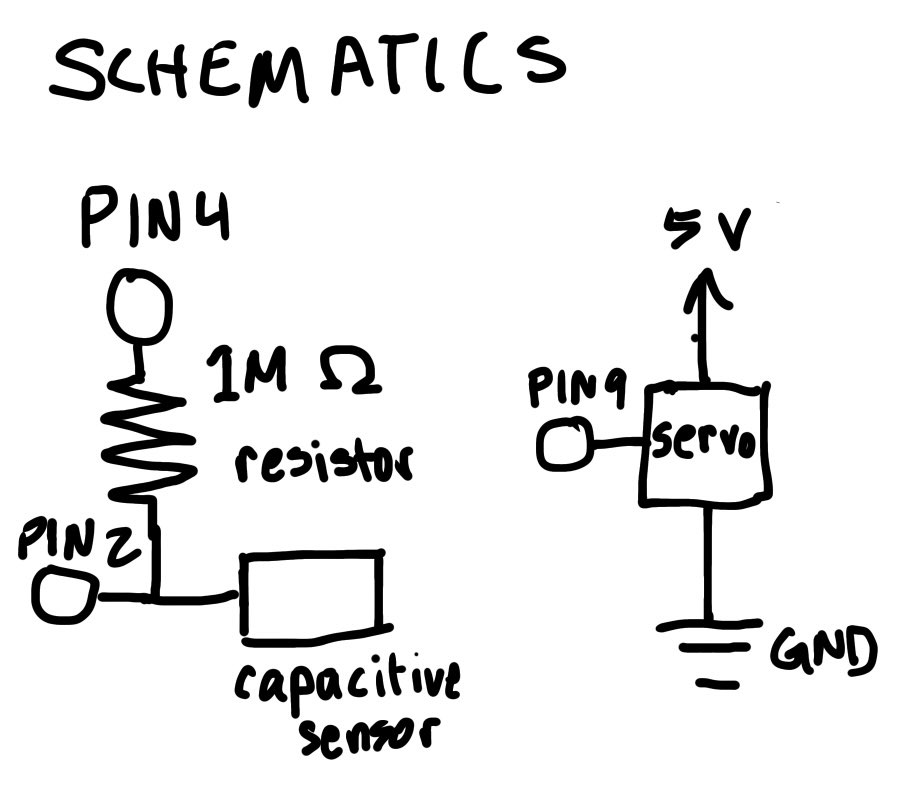
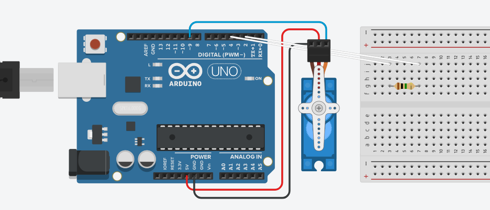
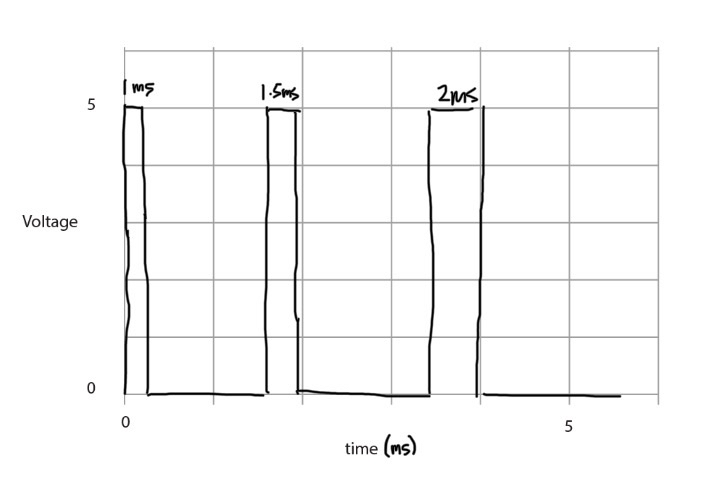

Circuit and Schematics

The sensor uses a 1M ohm resistor to activate when touched. There is an alligator clip attached to the 1M ohm resistor to connect a metal bracelet as a capacitive sensor.
Code Snippet
#include <CapacitiveSensor.h> // capacitive sensor library
#include <Servo.h> // servo library
CapacitiveSensor cs_4_2 = CapacitiveSensor(4, 2); // sensor between pins 4 and 2, pin 2 is sensor pin
Servo myservo; // servo object
int pos = 0; // servo position variable
int direction = 1; // direction variable (1 will be increasing, -1 decreasing)
void setup() {
cs_4_2.set_CS_AutocaL_Millis(0xFFFFFFFF); // turn off autocalibration
Serial.begin(9600); // speed of sensor readings
myservo.attach(9); // connect servo to pin 9
myservo.write(pos); // writes servo's position
}
void loop() {
long total1 = cs_4_2.capacitiveSensor(30); // reads sensor value
Serial.println(total1); // prints sensor value
if (total1 >= 400) { // if sensor value exceeds 400, servo moves
pos += direction; // servo moves in current direction
if (pos >= 180) { // servo reverses direction at the 180 degree limit
pos = 180;
direction = -1;
} else if (pos <= 0) { // servo reverses direction at the 0 degree limit
pos = 0;
direction = 1;
}
myservo.write(pos); // writes position to servo
delay(10); // servo speed
}
else {
myservo.write(pos); // keeps servo at position when not touching sensor
}
}Operation

Questions
Say you are using a servo motor you attach to pin 9. In your loop() you have the following code:
void loop() {
for (pos = 0; pos <= 180; pos += 1) {
myservo.write(pos);
delay(100);
}
}
Draw a graph with the x-axis as time and the y-axis as voltage at pin 9 with respect to ground.

Your input device is slightly broken, leading it to give us an erroneous reading 1% of the time. How can we address this? Answer in (pseudo)code.
We can set a case for outliers and set the reading to a previous one if it's too high or low.
read sensor value
if sensor value is > x times the previous value or < y times the previous value
sensor value = previous value
Your input device is slightly noisy, leading the measurement to randomly deviate from the true measurement up or down by 10%. How can we address this? Answer in (pseudo)code.
We can average sensor readings to smooth the data.
read sensor value x times
sensor value = sum of readings / x
Did you use AI tools in completing this assignment?
No.